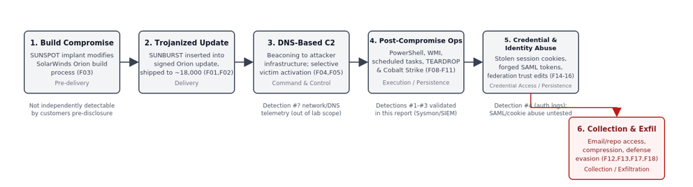
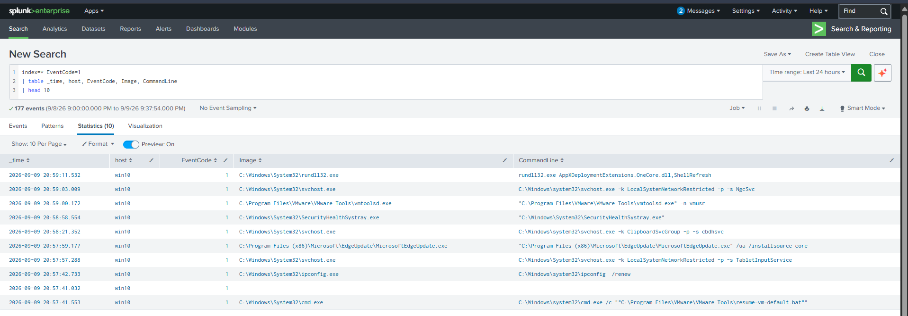
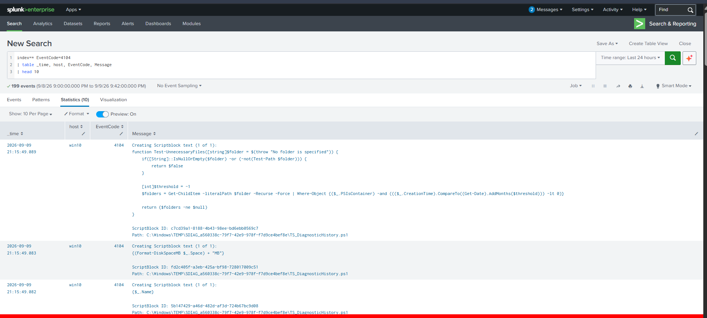
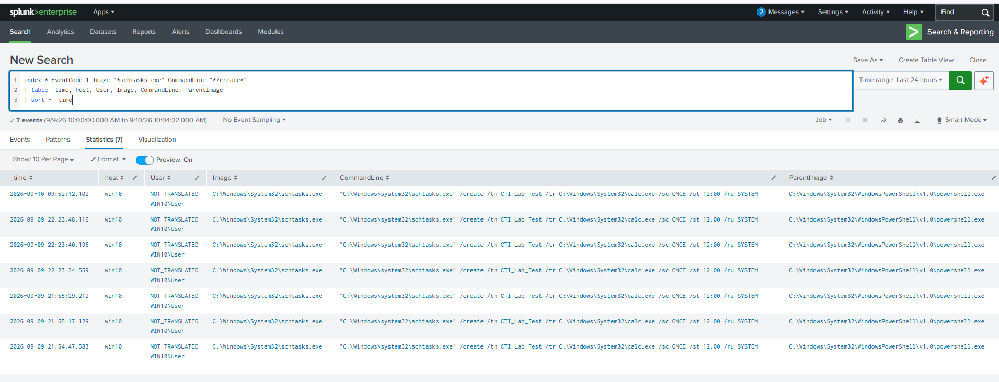
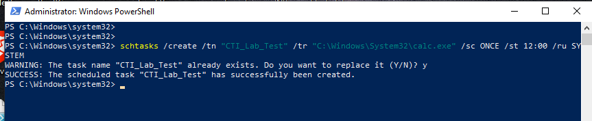

A Cyber Threat Intelligence Case Study
The SolarWinds SUNBURST campaign (MITRE C0024) represents one of the most significant supply-chain compromises in recent history. This report analyzes the campaign's tactics, techniques, and procedures (TTPs) and provides actionable detection engineering guidance for security operations centers (SOCs).
This report demonstrates the application of cyber threat intelligence (CTI) analysis to detection engineering, with practical validation in a home lab environment.
The SolarWinds supply-chain compromise (also known as SUNBURST) was discovered in December 2020. Attackers inserted malicious code into legitimate Orion software updates, which were then distributed to approximately 18,000 customers. A smaller subset of these victims experienced follow-on post-compromise activity.
This report examines the campaign through a CTI analytical framework, answering seven key intelligence questions (KIQs):
The report follows a structured analytical process:
Raw Intelligence → Validated Facts → Assessments → Confidence → Intelligence Gaps → Impact → Detection Opportunities → Lab Validation.
The diagram below traces the campaign from build-system compromise through to the attackers' ultimate collection and exfiltration objective. It maps each stage to the Validated Facts (F0x) that support it, and flags which stages this report's lab validation actually covers versus which remain outside its scope.

The following facts were validated using authoritative sources including MITRE ATT&CK, CISA, NSA, FBI, Microsoft, and Mandiant/FireEye. Confidence here reflects source strength for a directly reported fact, not analytic inference — see the Assessments section for graded analytic judgments built on top of these facts.
| ID | Fact | Source Strength | Status | Timeline |
|---|---|---|---|---|
| F01 | APT29 gained access through trojanized SolarWinds Orion updates | Very High | Known | Initial Access |
| F02 | SUNBURST used legitimate SolarWinds code-signing | Very High | Known | Delivery |
| F03 | SUNSPOT modified the build process to insert SUNBURST | Very High | Known | Pre-delivery |
| F04 | SUNBURST used DNS-based C2 | High | Known | C2 |
| F05 | APT29 used HTTP for post-compromise communications | High | Known | C2 |
| F06 | APT29 used compromised credentials for access | High | Known | Credential Access |
| F07 | APT29 performed account discovery | High | Known | Discovery |
| F08 | APT29 used PowerShell | High | Known | Execution |
| F09 | APT29 used WMI for remote execution | High | Known | Lateral Movement |
| F10 | APT29 used scheduled tasks for persistence | High | Known | Persistence |
| F11 | Additional tools (TEARDROP, Cobalt Strike) were deployed | Very High | Known | Post-compromise |
| F12 | APT29 accessed information repositories | High | Known | Collection |
| F13 | APT29 collected email from targeted accounts | High | Known | Collection |
| F14 | Stolen web-session cookies bypassed MFA | Very High | Known | Credential Access |
| F15 | APT29 modified federation trust settings | Very High | Known | Persistence |
| F16 | APT29 used forged SAML tokens | Very High | Known | Credential Access |
| F17 | Collected information was compressed before exfiltration | High | Known | Exfiltration |
| F18 | APT29 attempted to reduce security visibility | High | Known | Defense Evasion |
| F19 | Multiple malware families were used | Very High | Known | Multiple Stages |
| F20 | U.S. government attributed activity to Russia's SVR | Very High | Known | Attribution |
Based on the validated facts, the following analytic assessments were made. Confidence levels below were recalibrated to distinguish directly-evidenced conclusions from inferences: several judgments originally rated High have been revised to Medium where the underlying evidence supports a plausible conclusion but not a fully verified one (A05, A07). Reserving High confidence for claims with direct technical corroboration — rather than defaulting to it — is itself part of the discipline of analytic writing.
| ID | Assessment | Confidence | What Would Change My Mind |
|---|---|---|---|
| A01 | Supply-chain compromise was the primary initial access mechanism | High | Evidence of alternative access paths |
| A02 | Attackers exploited trust in legitimate software updates | High | Evidence trust was not relevant |
| A03 | The campaign evolved into a multi-stage intrusion beyond SUNBURST alone | High | Evidence post-compromise activities were unrelated to the initial implant |
| A04 | Attackers did not depend exclusively on SUNBURST for follow-on access | High | Evidence SUNBURST was the only tool used |
| A05 | Compromised credentials were strategically useful for lateral movement and persistence | Medium | Independent evidence credentials were not the primary lateral-movement vector |
| A06 | Identity and cloud authentication abuse were critical to the campaign's impact | High | Evidence cloud/identity access was minimal across victims |
| A07 | Attackers systematically operated through trusted authentication paths rather than exploiting software vulnerabilities post-access | Medium | Evidence of significant vulnerability exploitation post-access |
| A08 | Defense evasion was an important, deliberate part of tradecraft | High | Evidence attackers made no effort to reduce visibility |
| A09 | Behavioral indicators provide more durable defensive value than static IOCs | High | Evidence static IOCs remained effective long-term |
| A10 | Malware signatures alone provide incomplete visibility into this activity | High | Evidence signatures detected all associated activity |
| A11 | Cross-domain (endpoint/network/identity/cloud) detection is necessary for full coverage | High | Evidence single-domain telemetry was sufficient |
| A12 | Trusted-provider compromise creates material downstream risk for customers | High | Evidence provider compromise was effectively isolated |
| A13 | Attribution to Russia's SVR is High confidence at the government-assessment level | High (assessment-level) | Public disclosure of underlying government intelligence |
These gaps represent the boundaries of public knowledge and highlight the importance of continuous intelligence collection and analysis.
The SolarWinds campaign demonstrates that a sophisticated intrusion can exploit trust at multiple layers — software distribution, authentication, identity, and cloud infrastructure. Consequently, defenders should not rely solely on malware signatures, software reputation, or password-based authentication monitoring; effective detection requires behavioral correlation across endpoint, network, identity, and cloud telemetry.
| # | Detection | ATT&CK | Data Source | Confidence |
|---|---|---|---|---|
| 1 | Suspicious PowerShell | T1059.001 | Sysmon EID 1, PowerShell 4104 | High |
| 2 | Scheduled Task Creation | T1053.005 | Sysmon EID 1, Security 4698 | High |
| 3 | WMI Activity | T1047 | Sysmon EID 1, WMI Logs | High |
| 4 | Authentication Anomalies | T1078 | Security 4624/4625 | High |
| 5 | Logging Tampering | T1562.001 | Sysmon EID 1, Event 104 | High |
Threat Intelligence Basis: F08 — APT29 used PowerShell during post-compromise operations.
ATT&CK Mapping: T1059.001 — Command and Scripting Interpreter: PowerShell
Detection Hypothesis: Suspicious PowerShell patterns including encoded commands, web requests, and execution bypass can be detected using endpoint and SIEM telemetry.
Telemetry Required: Sysmon Event ID 1, PowerShell Operational Log Event ID 4104
powershell -Command "Invoke-WebRequest -UseBasicParsing https://example.com"
index=* EventCode=1 Image="*powershell.exe"
( CommandLine="*-e *" OR CommandLine="*-EncodedCommand *"
OR CommandLine="*Invoke-WebRequest*"
OR CommandLine="*.DownloadString*"
OR CommandLine="*-ExecutionPolicy Bypass*"
OR CommandLine="*-WindowStyle Hidden*" )
| table _time, host, User, Image, CommandLine, ParentImage
| sort - _time
Assessment: While these commands were benign tests, the detection patterns are consistent with attacker behavior documented in the SolarWinds campaign.
Threat Intelligence Basis: F10 — APT29 used scheduled tasks in post-compromise activity.
ATT&CK Mapping: T1053.005 — Scheduled Task/Job: Scheduled Task
Telemetry Required: Sysmon Event ID 1, Windows Security Log Event ID 4698
schtasks /create /tn "CTI_Lab_Test" /tr "C:\Windows\System32\calc.exe" /sc ONCE /st 12:00 /ru SYSTEMindex=* EventCode=1 Image="*schtasks.exe" CommandLine="*/create*"
| table _time, host, User, Image, CommandLine, ParentImage
| sort - _time
index=* TaskName="CTI_Lab_Test"
| table _time, host, EventCode, User, TaskName, Command
| sort - _time
Assessment: The task was created as a test and subsequently deleted. In a real intrusion, scheduled tasks are commonly used for persistence.
Threat Intelligence Basis: F09 — APT29 used WMI for remote execution and lateral movement.
ATT&CK Mapping: T1047 — Windows Management Instrumentation
Telemetry Required: Sysmon Event ID 1, Windows WMI-Activity Logs
wmic process call create "calc.exe"index=* wmic
| table _time, host, EventCode, Image, CommandLine
| sort - _time